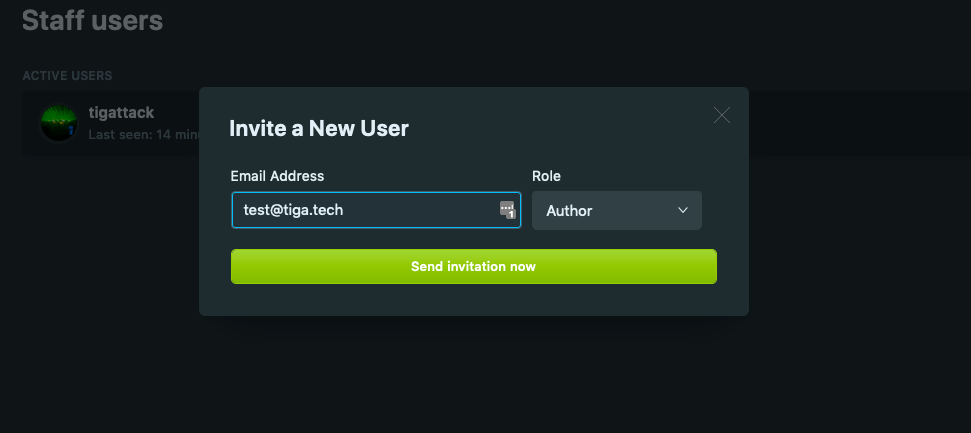
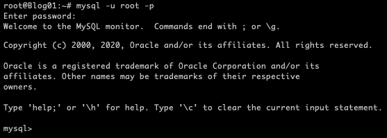
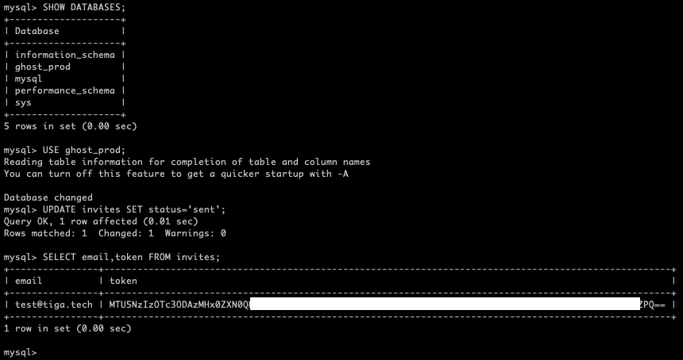
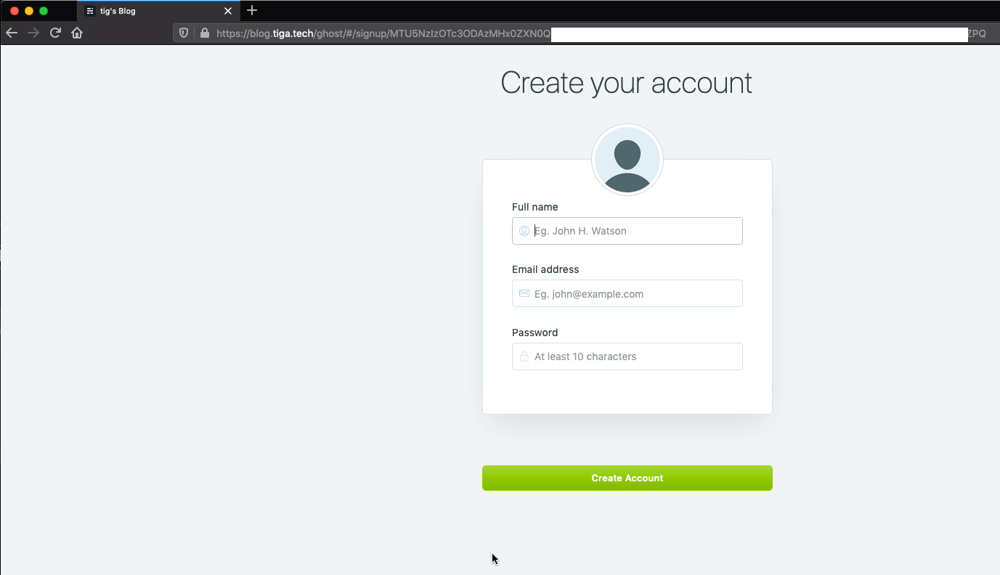

The Ghost platform makes it all but impossible to add new users if you don’t have a mail server configured.
In this post, I will show you how to work around this and add new users without needing to send an email.
Requirements
SELECTandUPDATEpermissions on the database backing Ghost.
If you set Ghost up yourself, you will have this.
Invite the User
- Log into your Ghost blog.
- Go to the “Staff” section.
- Click “Invite People”.
- Insert a dummy email and the role you’d like the user to have, then click “Send invitation now”.

Note: You’ll probably see an error after you’ve submitted the invitation. You can safely ignore this.
Get the Invitation
-
Connect to a shell on the server hosting your Ghost site.
-
Run the following command to login to mysql:
mysql -u <user> -p
 -
Ghost’s database is most likely named
ghost_prod, but run the following command to make sure:SHOW DATABASES; -
Run the following command to tell MySQL that you’re operating on the Ghost database:
USE ghost_prod;. Replaceghost_prodwith the name of your Ghost database if it differs. -
You need to tell Ghost that the invitation has been sent, otherwise the invitation will remain invalid:
UPDATE invites SET status='sent'; -
Now run
SELECT email,token FROM invites;. The invitation token is the important part of the output of this command. You want all of it except for the=(or==in some cases) at the end.
 -
Replacing
<token>with the token from the output of the last command and<your-blog-address>with your site’s address (e.g. blog.tiga.tech), send the following URL to the user:
https://<your-site-address>/ghost/#/signup/<token>
Done!
When the user visits this URL, they will see the sign-up page:
I always welcome feedback on my posts, please contact me if you have any. I’m also happy to answer any related questions if I know the answer.